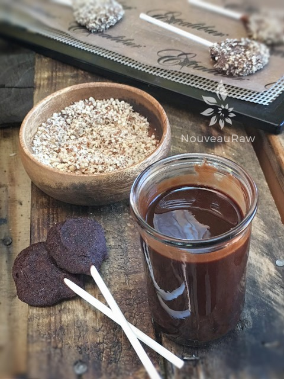

Chocolate covered Blueberry Leather Lollipops

~ raw, vegan, gluten-free, nut-free ~
These Blueberry Leather lollipops have stepped up to the level of true sophistication. The generous coating of chocolate and the added layer of crushed almonds and shredded coconut really dresses up this treat making it ready for the Red Carpet.
This treat is so amazing; even I shocked myself. I had an idea that it would taste good but not THIS good.
OMGosh, golly, gee-wiz!!! I took a bite… my teeth melted right through the thick chocolate coating, instantly releasing a rich aroma of chocolate (intoxication started to set in), I paused for a nanosecond, fearful that the fruit leather would be tough and cause some resistance, but it didn’t… I completed my bite…aaaah, nirvana!
I pulled the sucker away from my lips, closed my eyes and I took my time, savoring the chewy delight. What amazed me the most was that every flavor complemented each other. The chocolate didn’t overpower the blueberry leather; the blueberry leather didn’t override the chocolate, the slight hint of coconut.
My eyes widened, and my body relaxed back into itself as I marveled at my creation of the flavors that were swirling about my mouth. As I swallowed, the sweet essence of blueberry and chocolate-coated my throat, it was warming, it was sensuous, it was… it was… it was….(them to the Sound of Music swells in the background)… it was heavenly. I can’t say any more; you MUST try this for yourself.
This recipe was requested by a young mother who asked if I could come up with a sucker recipe so her little one didn’t feel left out when other kids had suckers in their hands. Thank you for the challenge, Daniel!
Yields 3 cups
Preparation:
- In the blender combine all ingredients listed above. Blend until nice and smooth. The skins of the blueberries will somewhat remain.
- Allow the mixture to rest for 10 minutes. This is a good time to prepare the dehydrator sheets.
- Place the teflex sheet on the mesh sheet and spray a very light coat of coconut oil on the teflex sheet. This will help with the removal of the lollipops when they have completed their dry cycle.
- Using a Tbsp, drop a spoonful worth onto the teflex sheet. Be sure to stagger them, so there is room to put the sucker stick into them.
- Slide the sucker stick into each circle of puree.
- Dehydrate at 145 degrees for 1 hour. Then reduce the temp to 115 degrees (F) and continue to dry for approx. 8 hours.
Culinary Explanations:
- Why do I start the dehydrator at 145 degrees (F)? Click (here) to learn the reason behind this.
- When working with fresh ingredients, it is important to taste test as you build a recipe. Learn why (here).
- Don’t own a dehydrator? Learn how to use your oven (here). I do however truly believe that it is a worthwhile investment. Click (here) to learn what I use.

Dip the sucker into chocolate and coat with crushed almonds or shredded coconut.
© AmieSue.com